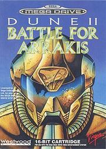
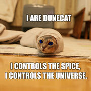
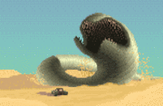
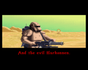
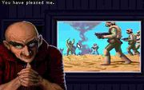
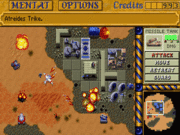
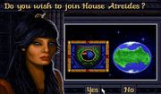
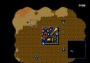
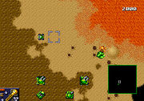
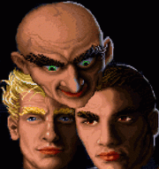

Дюна II: битва за арахис!
Dune 2: The Building of a Dynasty или просто Дюна — игра-предтеча современных RTS, изданная фирмой Westwood в 1992 году. Собственно, определение «real-time strategy» изобрели именно сотрудники Westwood и именно для Dune 2. На этой игрушке выросло целое поколение современных олдфагов. Её необычайная охуенность заключается в гениальной простоте. Игра является второй частью серии, созданной по книгам Ф. Герберта «Дюна». Можно грабить корованы.

Dune 2 создала то, на чём строятся современные стратегии в реальном времени. Строительство базы (в каждой миссии с нуля, причем прямо посреди поля боя), tank rush, деление игры на миссии, возможность выбора кампании. Понятие «C&C-клон», распространённое в конце девяностых — начале двухтысячных, на самом деле означало «Dune 2-клон». По сути игрового процесса, отличие, скажем, Warcraft’а от Dune 2 заключается в чуть другой системе строительства и возможности выбора юнитов рамкой.
Игра была портирована на все известные в то время игровые платформы, а в этой стране получила наибольшую известность благодаря приставке Mega Drive, куда Dune II портировали, выкинув часть свистелок и перделок (да-да, раньше было наоборот!).
А для тебя, мой юный друг, кричащий о Tiberium Wars и прочих какбе-некстген стратегиях, ниже изложены каноны, заложенные Westwood в Dune:

Господи Муаддиб! Это же ЧЕРВЪ! Скорее в орнитоптер!!!
Книга была написана американским писателем Фрэнком Гербертом, любившим, по всей видимости, принимать вещества в процессе написания. Главное место действия — планета-пустыня Арракис (рас. араб. الراقص), она же Дюна, единственный в галактике поставщик спайса — специи, которая калорийно хавается, даёт дар предвидения, удлиняет жизнь и член более, чем на 65% и развивает синдром красно--}синеглазия. Алсо, любимая нямка Навигаторов — местных космических бомбил-перевозчиков.
Серия книг про Арракис насчитывает шесть канонических томов и более 100500 фанфиков, в том числе и полуканоничные новоделы сынули старины Герберта, но нас интересует только первая. Сюжетная линия Дюны начинается с того, что Император всея галактики внезапно дарует Арракис, ранее оккупированный домом Харконнен, их расовым врагам — дому Атрейдес. Прибыв со своей семьёй в покинутый дворец Харконненов на Арракисе, Лето Атрейдес, глава дома, просекает, что такая халява неспроста. ИЧСХ, не ошибается. Вскоре Харконнены, при поддержке элитной имперской гвардии — сардукаров — десантируются на планету и выпиливают дом Атрейдес почти в полном составе: Пол[1] Атрейдес, наследник дома, вместе с матерью остаётся в живых, собирает аборигенов и анально карает врагов, for great justice! По щщам получают Харконнены, Император, Гильдия и все сочувствующие кровавому режиму. И это только начало…
В середине восьмидесятых годов одна итало-пендосская компания захотела показать всем, что умеет делать фильмы круче Лукаса[2]. Рецепт, по их мнению, был очень прост — берём занудную книгу, которую читают миллионы нердов, берём дюнофага и ставим его на главную роль, берём ебанутого на всю голову, но признанного воинствующим небыдлом, культового режиссёра Дэвида Линча, разбавляем нехилым бюджетом, и заключаем с Virgin Inc. контрахт на выпуск 2 игрушек для раскрутки. В итоге получился эпик фейл. Казуалы после просмотра поставили плашку «Я НИХУЯ НЕ ПОНЯЛ!!1», а фаны разбивали себе лбы фейспалмами от многочисленных нестыковок и маразматичного «видения» режессёра. В итоге фильм таки получил Оскара за лучшие костюмы, которые компания Westwood впоследствии понатырила для роликов в Emperor.
А в 2000-е канал SyFy снял понятную, хотя и дешёвенькую, экранизацию, из которой зрители, порвавшие мозг на фильме Линча, наконец уяснили, кто тут кому кем приходится, и почему эти люди хотят друг друга убить. Правда, многие эпичнейшие сцены тут тоже были просраны, но не из-за злоупотребления веществами, а из-за дыр в бюджете.
Представляет собой убойную смесь из пошаговой стратегии, квеста и симулятора езды на песчаных червях. Вещь хорошая, но, в силу неординарности, не сыскавшая популярности в широких кругах.
А ещё там хороший, годный электронный саундтрек.
Из книги взяты, собсна, Арракис, фремены, Атрейдесы, Харконнены, спайс и черви. Из фильма — акустическое оружие и общий антураж. Из носа же были выковыряны Ордосы, девастаторы и прочая неканонiчная ересь вроде танчиков в пустыне. Сюжет вкратце таков: «Шпайш машт флоу!!!» и «Всех убью — один останусь!» В дальнейшем про книгу можно забыть.

Злые Харконнены такие злые.

Харизматичный ментат дома Харконнен. У него определённо есть хитрый план.

Дюна 2. РС-версия. Олдфаг уронил скупую слезу.
Это заебёт вас в 9000 дальнейших RTS. Строим базу, огораживаем её пушками. Строим >9000 танков потяжелее и едем сносить вражескую базу. На высоких уровнях строим туеву хучу соников/девастаторов плюс пару-тройку ракетных танков, если соники не обломились. Смыть, повторить. Винрарность обеспечивала новизна процесса: балом в то время правили пошаговые стратегии. Были и стратегии в реальном времени, но они сидели в своих темных углах и злобно огрызались на проходящих мимо.
Среди юных любителей истории, есть мнение, что игра выпускалась на CD (да, в то время это было откровением), в частности из-за, вы не поверите, музыкального сопровождения (причём, интерактивного!). На самом деле, игра на отличненько копипастилась на дискетах, вместе с музыкой и говорящей заставкой. Ещё она поставлялась на картриджах для мегадрайва. Для проигрывания музыки на PC требовался супердевайс, именуемый в узких кругах звуковой картой. В те времена компьютер, оснащённый звуковухой, вызывал гораздо большее уважение чем сейчас — компьютер, способный потянуть «Крузис всё на МОКСЕМАЛЬНЫХ НОСТРОЙКАХ биз тармазов!!1», и встречался, в основном, в офисах успешных коммерческих контор, основанных бывшими студентами. Олдфаги с ХаТэ срали кирпичами, плевались на игру и шли в сотый раз проходить Цивилизацию или играться в Дюну II на Сеге-меге — там звук был, по тем временам, отличный, а на компе без саундблястера со звуком было плохо.

Незаслуженно забытый персонаж

Дюна 2. Mega-Drive-версия
В версии на Мегадрайве не было одного изобретения последнего времени: мыши. Был только джойстик. Поэтому, чтобы отправить более 9000 в лучшем случае, полтора десятка танков для сноса вражеской базы, нужно было каждого выделить курсором лично и отправить на эту самую вражескую базу. Этот процесс поначалу доставлял, но потом заставил пытливые умы задуматься об оптимизации и рационализации. В процессе экспериментов обнаружилось, что юнит можно отправить не только в определённую точку карты, но и к другому юниту. Стало быть, танк мог слепо и преданно следовать за любым другим юнитом (например, танком или пихотинцем). Это породило цепочки из юнитов, где каждый привязывался к следующему, а головной юнит отсылался на базу. Но умы не стояли на месте. Выяснилось, что корованы слишком просто грабить: танки шли по одному, и охрана базы без труда выносила всю колонну. Следующее изобретение было таким: несколько маленьких цепочек прикреплялись к одному головному юниту, и колонна становилась шире.
Справедливости ради стоит добавить, что такие цепочки всё равно были крайне неэффективным методом проведения массированной атаки на вражескую базу. Так, много геморроя мог доставить обыкновенный песчаный червь, решивший поужинать парой модулей, идущих в середине цепочки. Само собой, оставшиеся позади юниты теряли связь со своей «головой» и тупо останавливались посреди пустыни. Алсо, колонна могла распасться просто при повороте на 90 градусов, например. Жалкие остатки колонны отважно добирались до базы противника и благополучно выпиливались, не успевая нанести хоть сколько-нибудь значимый урон врагу. Всё это заставляло автора неиллюзорно срать кирпичами, а, учитывая невозможность сохранения игровой ситуации на мегадрайве, вообще способно было довести до исступления эмоций. Впрочем, на то и стратегия, чтобы проявлять тактический гений: три-четыре колонны подводились на близкое расстояние к базе противника, и оттуда уже юниты бросались в бой поодиночке.

Червие набигает! Sega-версия
Собственно, огробление корованов выражается в Dune 2: Battle for Arrakis в том, что комп, играя за ордосов, набигает и невозбранно «красит» харвестеры игрока при помощи своей вундервафли Deviator, и отгоняет их разгружаться на свои спайсоперегонные заводы. Win.
Цимес заключается в том, что игрок такую тактику провернуть не может — «покрашенный» харвестер компа упрямо отказывается заезжать на спайсоперегонный завод игрока, и его можно только расстрелять или отвести под свою базу, где его, в конце концов, таки расстреляют после возвращения его собственного «цвета». Fail.
На самом деле, провести такую операцию теоретически возможно. Для этого нужно расстрелять харвестер до «красного» состояния, а затем отправить ремонтировать. После ремонта он будет зеленый уже постоянно. Был и ещё один способ — если захватить Refinery врага в момент, когда там разгружается харвестер, он становился перманентной добычей захватчика вместе с фабрикой. Транспортники, они же Carryall, отнесут его на завод независимо от его желания. Win.
Стойбища корованов в Dune 2 можно было грабить засылая пихоту на чуть менее, чем полностью убитые строения противника. Заводы захватывались вместе с технологиями и возможностью строить уникальные вундервафли, что давало профит во многие сотни нефти спайса. Massive Win!

Ментаты Altogether
После успеха второй части, фаги стали пердеть в лужи с требованием продолжения. Разрабам было похуй. В итоге, фаги сами наделали более 9000 переделок. Примечательны они были, например, следующим:
Ещё была версия с полной русской озвучкой, большим и интересным readme от народных умельцев и редактором ресурсов, с заставкой и музыкой через спикер (без заиканий!), где (о чудо!) можно было прочитать на русском всю предысторию Дюны, недоступную в оригинальной игре. Алсо, там можно было найти те самые дополнительные, скрытые дома (всего их было 6, причем фримены и сардукары видны были и так).